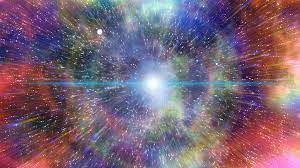

asoidjas
TEORIA DO BIG BANG

A teoria do Big Bang é a explicação científica mais aceita para a origem e evolução do Universo. Segundo essa teoria, o Universo começou como uma singularidade extremamente quente e densa há aproximadamente 13,8 bilhões de anos. Nesse momento inicial, toda a matéria, energia e espaço-tempo estavam contidos em um ponto infinitesimal de densidade infinita.
O termo "Big Bang" foi cunhado pelo astrofísico Fred Hoyle em uma tentativa de ridicularizar a ideia, mas acabou sendo adotado para descrever esse evento crucial na história cósmica.
À medida que o Universo começou a expandir-se e arrefecer, a matéria começou a condensar-se em formas cada vez mais complexas, eventualmente dando origem a estrelas, galáxias e sistemas solares. Essa expansão ainda está em curso hoje, evidenciada pela observação de que as galáxias estão se afastando umas das outras em todas as direções.
Uma das evidências mais poderosas a favor da teoria do Big Bang é a radiação cósmica de fundo em micro-ondas, que é uma radiação eletromagnética residual remanescente do calor emitido durante os estágios iniciais do Universo. Descobertas acidentais em 1965, essa radiação foi uma confirmação crucial da teoria.
Além disso, as observações astronômicas modernas, como a taxa de expansão do Universo medida através de supernovas distantes, a distribuição de elementos químicos no cosmos e a abundância de estruturas cósmicas observáveis, também apoiam fortemente a teoria do Big Bang.
Embora a teoria do Big Bang seja amplamente aceita, ainda existem muitas questões não respondidas, como o que causou o Big Bang, o que havia antes dele (se é que faz sentido perguntar) e a natureza exata da energia escura e da matéria escura, que constituem a maior parte da matéria e energia no Universo observável.
Em resumo, a teoria do Big Bang fornece uma estrutura sólida para entender a origem e a evolução do Universo, mas continua a inspirar pesquisa e investigação em muitas áreas da física e da astronomia.